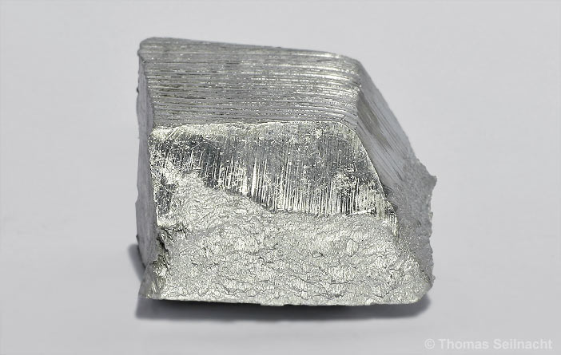
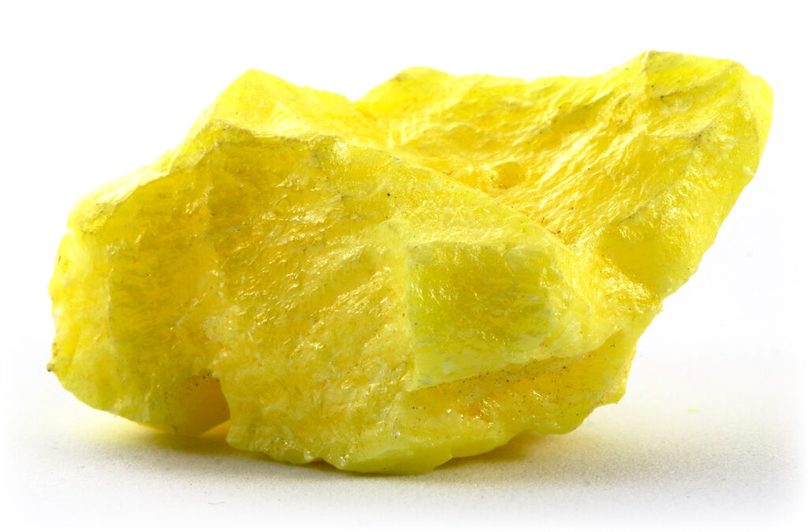

H HYDROGENE: N'appartient à aucune famille
He
Li
Be
B
C
N
O
F
Ne
Na
Mg
Al ALUMINIUM: Fait parti de la famille des métaux pauvres
Si
P
S SOUFRE: Fait parti de la famille des chalcogènes
Cl
Ar
K
Ca
Sc
Ti
V
Cr
Mn
Fe
Co
Ni
Cu
Zn
Ga
Ge
As
Se
Br
Kr
Rb
Sr
Y
Zr
Nb
Mo
Tc
Ru
Rh
Pd
Ag
Cd
In
Sn
Sb
Te
I
Xe
Cs
Ba
Hf
Ta
W TUNGSTENE: Fait parti de la famille des métaux de transition

Re
Os
Ir
Pt
Au
Hg
Tl
Pb
Bi BISMUTH: Fait parti de la famille des pnictogènes

Po
At
Rn
Fr
Ra
Rf
Db
Sg
Bh
Hs
Mt
Ds
Rg
Cn
Nh
Fl
Mc
Lv
Ts
Og
La
Ce CERIUM: Fait parti de la famille des lanthanides

Pr
Nd
Pm
Sm
Eu
Gd
Tb
Dy
Ho
Er
Tm
Yb
Lu
Ac
Th
Pa
U
Np
Pu
Am
Cm
Bk
Cf
Es
Fm
Md
No
Lr